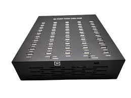
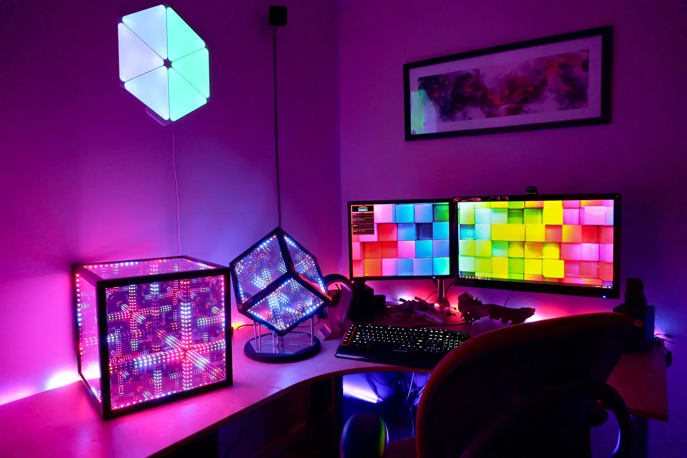
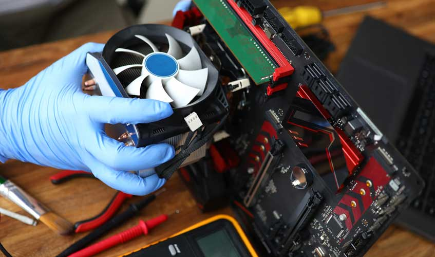

Accessories, Aesthetics & Maintenance
Essential Accessories

- Mechanical keyboards with custom switches or RGB lighting
- High-DPI ergonomic or gaming mice
- Extended mousepads or desk mats for smooth movement
- Monitor arms to adjust height and save desk space
- Headset stands, USB hubs, and cable organizers
Aesthetic Upgrades

- RGB lighting strips and fans synced with your setup
- Sleeved power cables in custom color schemes
- Tempered glass or mesh PC cases for airflow and looks
- Custom GPU backplates, case mods, and decals
- Peripherals that match your setup’s theme
Regular Maintenance Tips

- Dust your PC regularly using compressed air or a blower
- Clean or replace dust filters and fan blades
- Reapply thermal paste every 1–2 years (if needed)
- Use hardware monitoring tools to track temps and adjust fan curves
- Organize cables to maintain good airflow and visual appeal